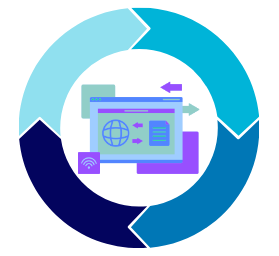

SCRUM
¿Qué es?
Scrum es un método ágil que puede ser el más usado para la industria del desarrollo de software ya que se adapta a las peticiones más comunes de clientes, los cuales son trabajos ya definidos con pocos cambios en el camino y principalmente con un tiempo corto para hacerlo haciéndolo muy útil en varios casos, aunque cuenta con algunas desventajas de las que se hablarán más adelante.
Principios básicos de Scrum
Los principios de Scrum pueden ser cambiados o modificados dependiendo los requisitos del software pero en la mayoría de casos son los siguientes:
- • Control empírico de procesos: esta trata de la transparencia, conseguir que la información del proceso esté asequible para todos los implicados; inspección, se debe inspeccionar los artefactos que genera Scrum de manera periódica para detectar desviaciones; y adaptación, realizar ajustes en caso de presentarse variaciones.
- • Autoorganización: los miembros del equipo se dirigen a sí mismos lo que hace que la comunicación sea crucial para que el trabajo tenga éxito
- • Colaboración: es necesario que el equipo colabore equitativamente para obtener el mejor producto posible.
- • Priorización basada en el valor: en Scrum se prioriza las actividades que generen valor al producto y así sea más fácil que se acepte el trato y también estar preparados en caso de cambios.
- • Time-boxing: significa que todas las actividades tienen una fecha de terminación determinada y que no se puede modificar ya que afecta los tiempos de los demás y retrasa el trabajo.
- • Desarrollo iterativo: el software se desarrolla con diferentes bloques temporales que se les llama iteraciones.
Características de Scrum
- • En Scrum tenemos ciclos o sprints, en los cuales se van a ir trabajando
Los Sprints son sesiones de entre 1 semana o 1 mes en las que se trabajan diferentes actividades y, en la mayoría de los casos, se le entrega un avance del proyecto al cliente para que verifique que vaya en el camino correcto
- • En Scrum se trabaja con roles, es decir, van a existir una serie de roles en el proyecto, que se van a encargar de diferentes tareas.
Los roles se especificarán más adelante, pero los roles cumplen las mismas funciones que los roles de los métodos “comunes” solo contando con 1 o 2 cambios.
Proceso
Scrum se trabaja mediante sprints o iteraciones definidas que tienen una duración corta cuyo propósito es avanzar una parte del proyecto y preparar un entregable para el cliente y él indique los cambios necesarios en caso de necesitarlo.
- 1. Scrum empieza escuchando los requisitos del cliente para tener la base para iniciar con el proyecto.
- 2. Después se planean los sprints, se indica el tiempo que durará cada sprint, las acciones a realizar en cada sprint, la duración de cada actividad y se designan todos los detalles necesarios de cada actividad, como quién es el encargado de hacerlas, cuánto tiempo exacto dura, qué se hace en la actividad y algunas notas si es necesario.
- 3. Antes de entrar al sprint se hace una retroalimentación de la información trabajada en el paso anterior y se revisa si es necesario cambiar algo.
- 4. Se inicia el sprint y se hace las veces que se delimitó en el paso 2
a. Dentro de los sprints se hacen minutas diarias en las que se revisa el trabajo de todos los miembros para poner al día a los demás.
b. De cada sprint sale algún entregable que se le da al cliente para revisar el progreso del proyecto y decir de algún cambio necesario.
- 5. Por último, se entrega todo el contenido que le pertenece al cliente siendo lo más importante el software desarrollado.
Ventajas
- Mayor satisfacción al cliente: se le hace saber al cliente los avances del proyecto al final de cada sprint por lo que tiene bastantes oportunidades de cambiar alguna cosa y que al final esté más satisfecho con el resultado.
- Mayor productividad: debido a los tiempos cortos, la productividad aumenta debido a que se planea todo de manera que se aproveche el mayor tiempo posible.
- Mayor colaboración: en Scrum la colaboración es crucial debido a que se requiere de todo el equipo trabajando para que el proyecto sea exitoso, por lo tanto, se practica mucho el trabajo en equipo
- Mayor calidad: relacionado a mayor satisfacción al cliente, se le da mucha atención al cliente y avances del producto por lo que es más probable que el software sea de mayor calidad comparado a algún otro hecho con otro método
- Flexibilidad: como en cada Sprint se muestra un avance del proyecto, usar este método hace que sea más flexible a cambios debido a que se obtiene la verificación del cliente constantemente.
Desventajas
- Requiere experiencia: Scrum es un método que si no lo sabes trabajar será muy difícil seguir el paso del método ya que requiere que puedas hacer multi tarea y trabajar con tiempos cortos
- Dependencia del equipo: para que el proyecto tenga éxito, dependes mucho de que los demás miembros del equipo hagan su trabajo correctamente y sepas trabajar en equipo, ya que si hace falta alguna de estas cosas, la calidad del trabajo empeorará mucho
- Aprendizaje continuo: se requiere que aprendas continuamente en el corto plazo de tiempo lo que hace que ya tengas esa habilidad adquirida o la adquieras rápidamente.
- Presión o estrés en el equipo: al tener que hacer mucho en poco tiempo y tener esa sensación de ser “explotado” al hacer mucho en poco tiempo
Roles
- Propietario: es quien gestiona la información proporcionada por el cliente y del trabajo de los miembros del equipo
- Experto en Scrum: es la persona encargada de guiar a los miembros más nuevos trabajando con este método y es quien más experiencia posee
- Equipo de desarrollo: es el equipo encargado de desarrollar el software y también el diseño si es necesario
- Cliente: es quien establece las especificaciones básicas para comenzar a trabajar
- Stakeholder: es quien mantiene al equipo comunicado, toma decisiones importantes y mejora la organización del equipo. También el debe estar presente a la hora de hablar con el cliente
Casos prácticos
- • Google
- • Amazon
- • Microsoft
- • Spotify
- • Adobe
